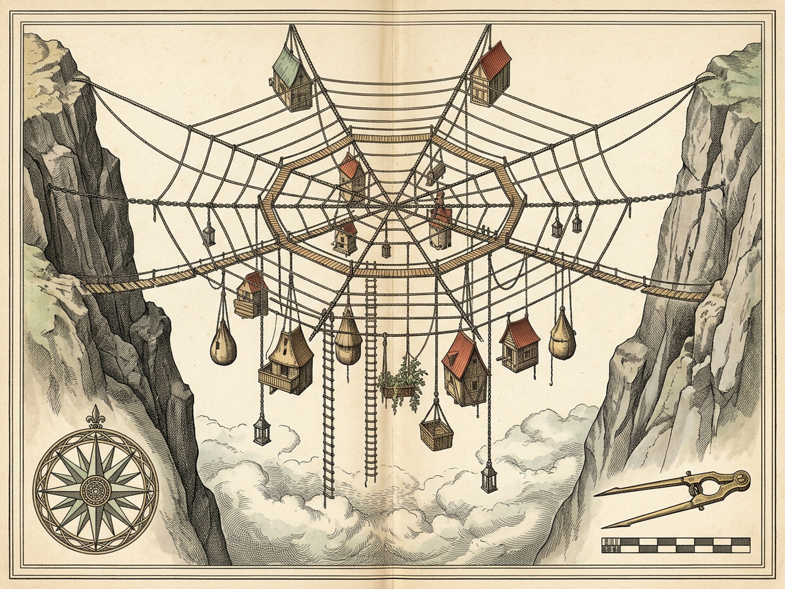
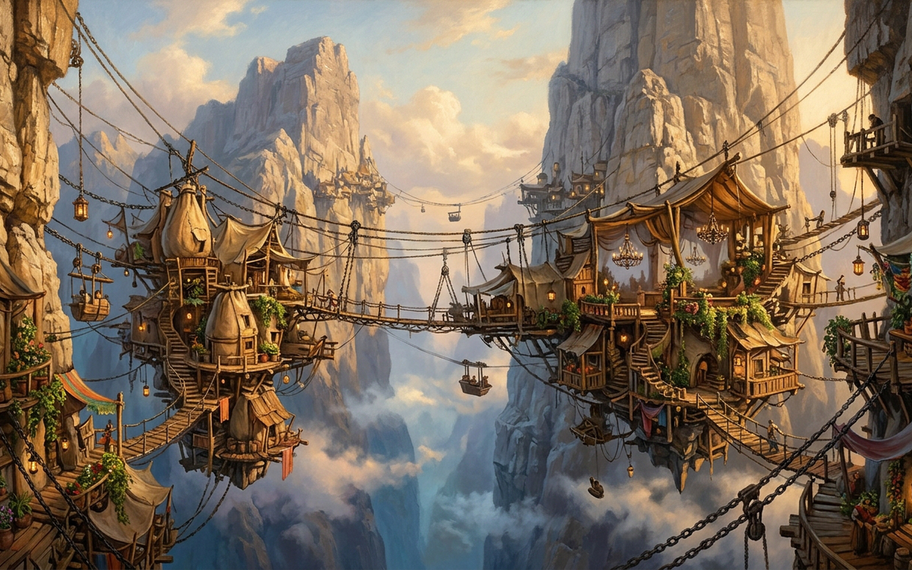

OCTAVIA
Spider-Web Span Bound to Twin Crests · 840 ft Void
Measured Downward Settlement
H
Hang Next
A
Hang All 14
U
Build Upward
W
Walk Ties
G
4kt
9kt
18kt
26kt
Y
+3yr Wear
M
Harp Muted
R
Reset
P
Royal Plates
1 · Rope Ladders18kg
2 · Sack-Hammocks64kg
3 · Clothes Hangers12kg
4 · Gondola Terraces72kg
5 · Water Skins34kg
6 · Gas Jets19kg
7 · Spits24kg
8 · String Baskets15kg
9 · Dumb-Waiters38kg
0 · Showers28kg
Trapezes & Rings22kg
Cable Cars58kg
Chandeliers30kg
Trailing Plants20kg
Downward Hung
4 / 14 · 184 / 540 kg
Suspended below catenary · center of gravity steady
Known Net Lifespan
39.8 yrs remaining
Measured hemp & chain endurance · never infinite
Civic Serenity
53%
Life Uncertainty
47% vs 78% other cities
Less uncertain — the net will last only so long
Upward Hubris & Ties
0 standing · 0 toppled
44 wooden ties · Ankle-twist risk 18% · Cloud bed glimpse
Renew Hemp
Bare Span
Suspended between two steep mountain crests over 840 feet of void: step carefully across the little wooden ties or hang all fourteen civic stones downward beneath the spider-web net.

Plate I · Copperplate Survey of the Catenary Net, Twin Crests & 14 Pendant Hooks (1600×1200)

Plate II · Suspended Dwellings, Sack-Hammocks & Lanterns Over the 840-Foot Void (1600×1000)